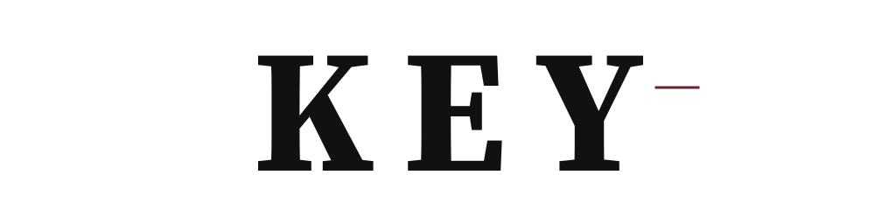
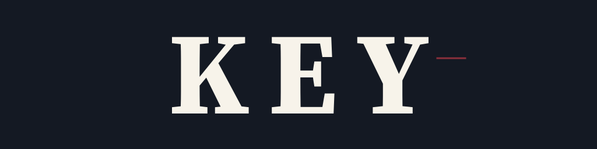
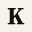
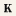
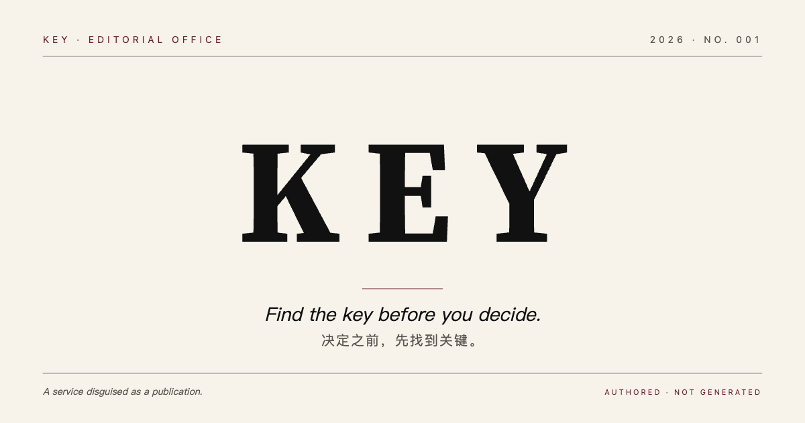

KEY Wordmark · V2
Direction A locked in. All assets re-rendered as outlined paths — no webfont dependency. Mark repositioned. Y-fork shipped as a separate exploration. Favicon + OG suite included.
I · What changed since V1The five lifts
- SVGs are outlined paths. No more class="km" referring to nothing. Every wordmark file is a self-contained <path> that renders identically wherever it lands — React component, email signature, press PDF, dev preview.
- Mark moved inward. From x≈850 (V1) to endX + 14px — sits within visual gravity of the Y. Length reduced to 48px (from 68px). Burgundy on light, Burgundy 400 on dark.
- Nav-size variant. Tracking eased to +0.19em for sub-24px lockups (top-nav, email sig). Display lockup keeps +0.16em.
- Y-fork — shipped as exploration. Subtle path extension at the bottom of Y’s left arm. Visible only on close inspection. Shipped as a separate file so it can be reviewed before promoting into the canonical lockup.
- Favicon + OG suite. Single-letter K favicon (16/32/180). 1200×630 OG image. Mark-only SVG for stamp/signature use.
II · CanonicalDirection A · production
Outlined Source Serif 4 Bold (700) at +0.16em. The single source of truth for every other variant.

Burgundy hairline · gap 14px · y 100
#141923 · #F7F3EA · mark #8A2F3BMark — V1 vs V2 positioning
III · Size variantsDisplay vs nav
Letter-spacing in em units doesn’t scale linearly — what reads as “wide masthead” at 224 pt reads as “cramped” at 18 pt. Two lockups handle the range. Threshold: 48 px cap-height. Above it, display. Below, nav.
IV · Y fork · explorationThe fingerprint
Subtle path extension at the bottom of Y’s left arm — a 6–7% vertical “continuation” past the natural junction. The goal, per V2 feedback: five minutes don’t see it, fifteen minutes notice it. Shipped as a separate file so the reviewer can decide whether to promote it into the canonical lockup or keep Y clean.
My take
I’m on the fence. The fork is real, but subtle to the point of being deniable. The Y in Source Serif 4 Bold already has a structurally strong junction — the extension reads as intentional on close inspection, but at 24 px nav size it disappears.
Two ways to go in V3:
- Promote. Bake the fork into the canonical key-wordmark.svg and treat it as the brand’s invisible signature — visible only at large display sizes.
- Drop. Accept that Source Serif 4 Bold’s native Y already does the work. Save the fork for a custom-drawn V3 (with proper font-editor tooling) if we still want a fingerprint.
I lean (1). The fork is craft — and craft that only the careful reader sees is exactly the brand promise. But I won’t commit without your call.
V · Favicons + OGSmall marks
The full KEY wordmark blurs at favicon scale. Solution: single-letter K as the icon. Source Serif 4 Bold K is distinctive enough — strong serifs, recognizable junction, weight — to read as KEY’s mark in a browser tab.


Key-mark alone
For wax-stamp uses (email signature footer, end-of-letter ornament, brief seal): the burgundy hairline alone. 96 × 24 viewBox.
OG image · 1200 × 630
Social cards and rich-preview surfaces. The Founder Edition cover, compressed to one frame.

VI · FilesWhat’s shipped
| File | Description |
|---|---|
| key-wordmark.svg | Canonical · outlined · display tracking +0.16em. |
| key-wordmark-nav.svg | Nav-size lockup · outlined · tracking +0.19em. |
| key-wordmark-with-mark.svg | Canonical + repositioned mark (gap 14, y 100). |
| key-wordmark-on-dark.svg | Outlined · on Night Navy · mark in Burgundy 400. |
| key-wordmark-monochrome.svg | Outlined · transparent · ink only · press. |
| key-wordmark-A-y-fork-explore.svg | Exploration. Subtle fork on Y left arm. For review. |
| key-mark-only.svg | Burgundy hairline alone · 96 × 24 viewBox. |
| key-favicon-src.svg | Source SVG for favicons · Source Serif K · 256 × 256. |
| key-favicon-16.png | 16 × 16 favicon. |
| key-favicon-32.png | 32 × 32 favicon. |
| key-favicon-180.png | 180 × 180 apple-touch-icon. |
| key-og-image.svg | Source SVG for OG image · 1200 × 630. |
| key-og-image.png | Rasterized OG image · 1200 × 630. |
| index.html | This V2 presentation. |
| README.md | V2 decisions, deltas from V1, V2 → V3 feedback expected. |
Deferred to V2.5 / V3
- Direction C poster lockup. Bodoni Moda outlining is queued — needs jsDelivr fetch path verified. Brief 04 in V2 still uses Source Serif 4 for the poster wordmark.
- OG / favicon text rasterization fidelity. The OG PNG currently rasterizes the small italic tagline using a system fallback serif. Functional but not press-grade. V3 will either outline that text too or rasterize via headless browser with embedded fonts.
- Y-fork decision. Promote into canonical (V3 path edit) or drop (canonical stays clean).